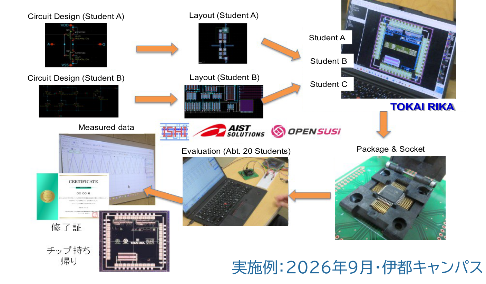
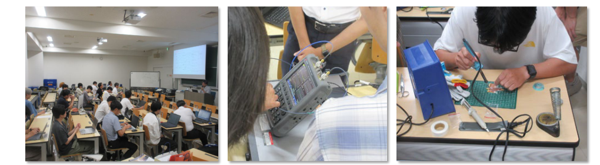
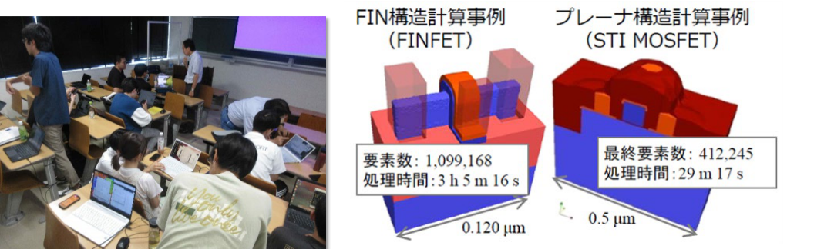
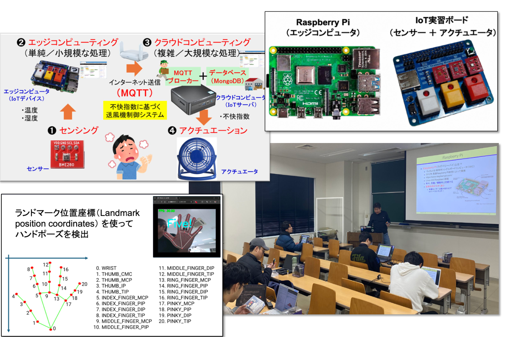

半導体設計実習
クラウド環境でインバータ、加算器、アナログ回路を題材に、回路設計からシミュレーション、レイアウト設計までを実践します。設計した回路をチップとして試作し、電気特性と動作を評価。回路が実物として動くまでを体験します。
実施例：2026年9月・伊都キャンパス

SEMICONDUCTOR SYSTEMS TALENT
半導体を使い、価値を創る
半導体の実習経験をシステムやサービスの発想へ。回路から応用までを見渡し、新たな価値を生み出す人材を育成します。
共同拠点校九州大学
回路の設計からシステム応用まで、資料に掲載された実習・取組を紹介します。
クラウド環境でインバータ、加算器、アナログ回路を題材に、回路設計からシミュレーション、レイアウト設計までを実践します。設計した回路をチップとして試作し、電気特性と動作を評価。回路が実物として動くまでを体験します。
実施例：2026年9月・伊都キャンパス

高周波回路の基礎から設計・製作・計測までを実践。高周波シミュレータでフィルタやアンプを設計・製作し、計測器で回路特性を評価して、シミュレーションと実測を比較します。
実施例：2026年8月・伊都キャンパス
協力：キーサイト・テクノロジー株式会社

半導体シミュレーションツール（TCAD）でイオン注入、酸化、拡散、エッチングなどの製造工程をモデル化。電子・正孔の動きや電気特性をシミュレーションし、FinFETを含むデバイスの構造と動作を学びます。
実施例：2026年9月・伊都キャンパス
協力：アドバンスソフト株式会社

Raspberry Pi、センサー、Node-REDを使い、センサーデータの取得・可視化、モータ制御、AIを活用した処理までを実践します。さらに、アイデアソンを通じて、学んだ技術を社会の課題解決や新たな価値の創出にどう生かすかを考えます。
実施例：2026年3月・伊都キャンパス

32ビットRISC-V命令セットと内部構造を学び、基本5段パイプラインのブロック図作成からVerilog-HDLによるRTL設計・検証、論理合成まで実践。例外処理、分岐予測、アウトオブオーダ・スーパスカラや生成AIを活用した設計手法にも挑戦します。並列プログラム、コア数、メモリ容量を工夫し、制約の中で性能を高める構成を探ります。
九州大学で試行実施中（2026年10月の資料より）